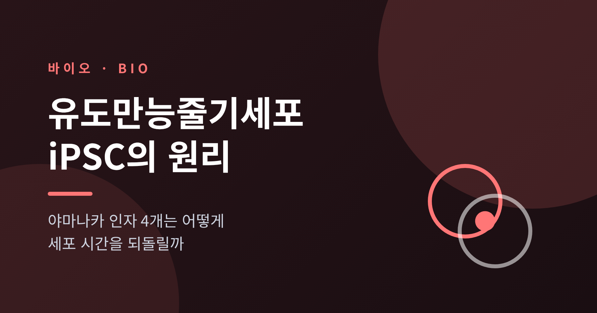
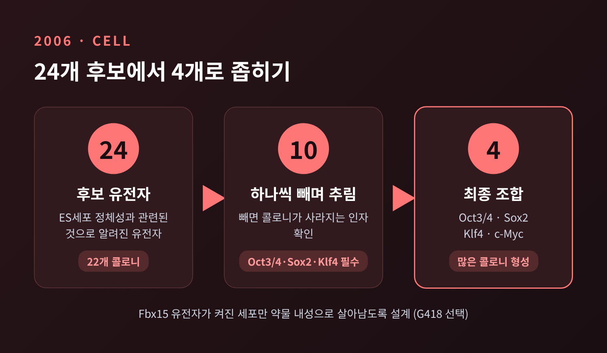
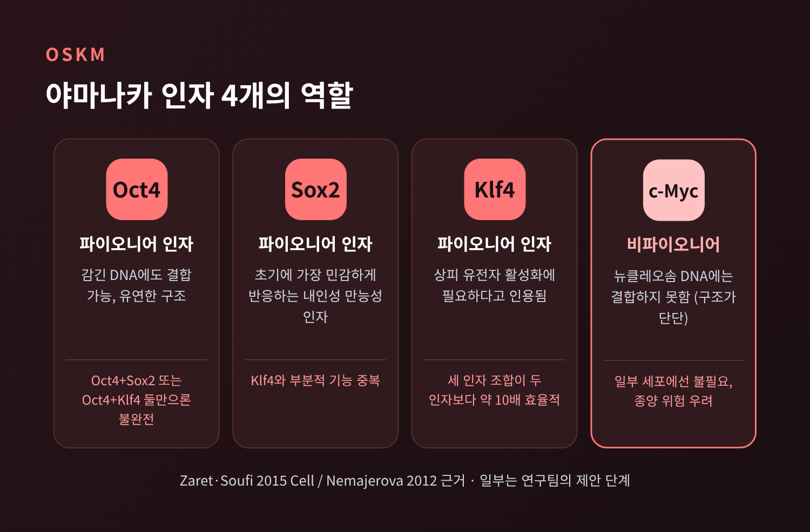
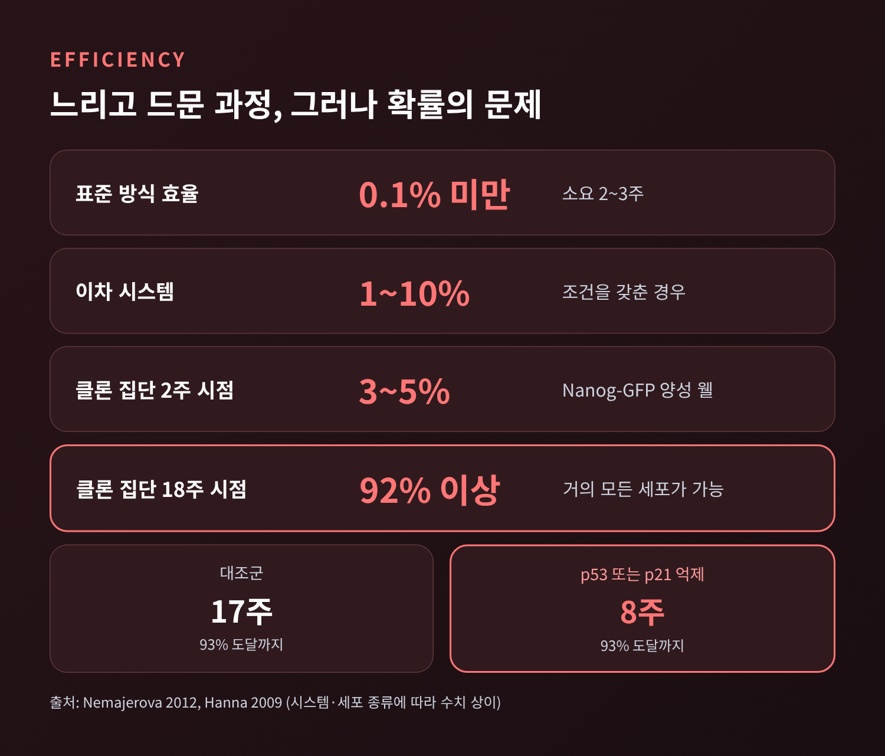
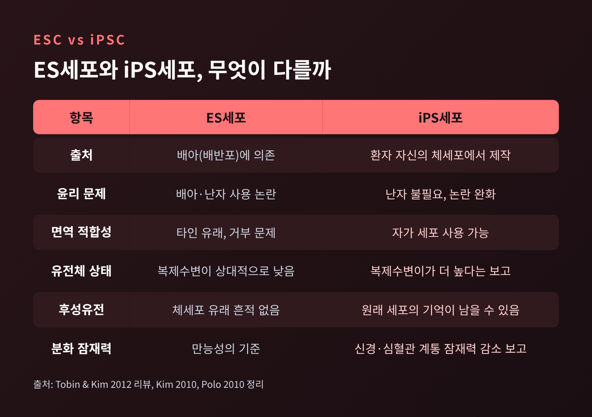
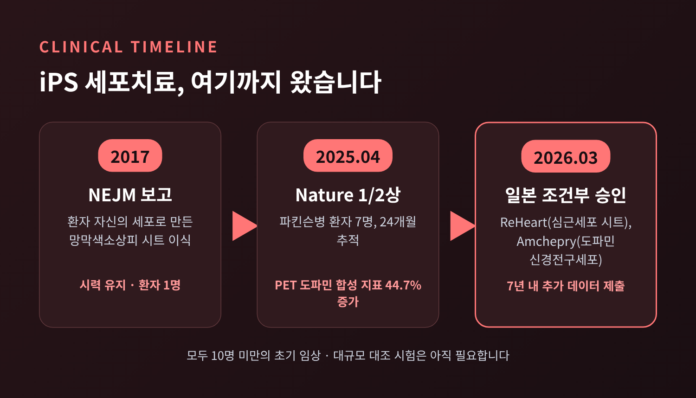

유도만능줄기세포 원리 — 야마나카 인자 4개는 세포를 어떻게 되돌릴까

오늘은 유도만능줄기세포(iPSC)의 원리에 대해 이야기해 보려 합니다.
피부세포에 유전자 네 개를 넣으면 세포가 배아줄기세포와 비슷한 상태로 돌아갑니다. 이 네 유전자를 야마나카 인자라 부르며, 2006년의 이 발견은 2012년 노벨 생리의학상으로 이어졌습니다.
작동 원리, 낮은 효율과 종양 위험, 그리고 질병 모델링과 세포치료의 현황까지 차례로 정리해 보겠습니다.
■ 세포의 운명은 되돌릴 수 없다고 믿던 시절
1962년 존 거던은 개구리의 장 세포에서 핵을 꺼내, 핵을 제거한 개구리 난자에 넣었습니다.
난자는 정상적인 올챙이로 자랐습니다. 이미 성숙한 세포의 DNA에도 몸 전체의 설계도가 그대로 남아 있다는 증거였습니다.
거던 본인은 이 연구에 "뚜렷한 치료적 이점이 전혀 없었다"고 말했습니다. 핵이식 기술은 복제양 돌리에 쓰였지만, 인간 세포에 적용하기는 어렵다고 여겨졌습니다.
예전에는 난자의 힘을 빌려야 세포의 운명을 되돌릴 수 있었습니다. 지금은 유전자 몇 개를 넣는 것으로 접시 위에서 같은 일이 가능합니다.
■ 24개 후보에서 네 개로
2006년 야마나카 신야 연구팀은 배아줄기세포(ES세포)의 정체성과 관련된 것으로 알려진 유전자 24개를 후보로 삼았습니다.
만능성을 얻은 세포만 골라내기 위해, ES세포에서 켜지는 Fbx15 유전자에 약물 내성 표지를 달았습니다. 이 유전자가 켜진 세포만 약물 속에서 살아남습니다.
후보를 하나씩 넣었을 때는 살아남은 콜로니가 없었습니다. 24개를 모두 넣자 22개의 콜로니가 나왔습니다.
이어 하나씩 빼 가며 10개로 추렸고, 끝내 Oct3/4, Sox2, Klf4, c-Myc 네 개가 남았습니다.

이렇게 만든 세포를 생쥐 피부 밑에 이식하자 세 배엽의 조직이 모두 섞인 종양(기형종)이 생겼습니다. 포배에 주입하면 생쥐 배아의 발생에도 기여했습니다. 만능성을 갖췄다는 뜻입니다.
다만 첫 세대 iPS 세포가 ES세포와 똑같지는 않았습니다. 유전자 발현은 가까웠으나 동일하지 않았고, 일부 클론에서는 Oct3/4와 Nanog 유전자의 스위치 부위가 부분적으로 메틸화된 채였습니다.
이듬해인 2007년에는 인간 세포에서도 성공이 보고되었습니다. 야마나카 팀은 같은 네 인자로 성인 피부세포를 바꿨습니다. 미국 톰슨 연구실 팀은 OCT4, SOX2, NANOG, LIN28이라는 다른 조합으로 같은 결과를 얻었습니다. 인자의 조합은 하나가 아니라는 사실이 이때 드러났습니다.
■ 네 인자는 각각 무엇을 할까
세포의 DNA는 히스톤에 단단히 감겨 있고, 쓰지 않는 유전자는 그 안에 잠겨 있습니다. 재프로그래밍은 이 잠긴 문을 여는 일에서 시작합니다.
펜실베이니아대 Zaret·Soufi 연구팀은 2015년 Cell에서 Oct4, Sox2, Klf4가 이렇게 감긴 DNA에도 붙을 수 있다고 보고했습니다. 구조가 유연해서 DNA 모티프의 일부만 붙잡고 히스톤 결합 부위는 건드리지 않기 때문이라는 설명입니다. 닫힌 문에 먼저 손을 대는 '파이오니어 인자'인 셈입니다. 반면 c-Myc는 구조가 단단해 이런 DNA에는 붙지 못한다고 합니다.
생쥐 배아 섬유아세포 실험은 인자들이 서로를 필요로 한다는 점을 보여줍니다.
- Oct4와 Sox2 둘만, 또는 Oct4와 Klf4 둘만으로는 만능성에 이르지 못했습니다. 여러 계통의 표지를 섞어 가진 일시적 세포만 생겼습니다.
- 세 인자를 함께 쓰면 두 인자 조합보다 효율이 약 한 자릿수 높았습니다.
- 일부 세포 분획에서는 c-Myc 없이도 재프로그래밍이 가능했습니다.
붙는다고 끝은 아닙니다. 한 연구에서는 재프로그래밍에 실패한 세포에서도 인자들이 목표 유전자의 프로모터에 붙었지만, 만능성 유전자는 켜지지 않았습니다. 성공한 세포에서는 OCT4 프로모터가 약 10kb 떨어진 인핸서와 맞닿는 DNA 고리가 자주 보였습니다. 연구진은 이 고리의 형성이 드문 확률적 사건일 수 있다고 해석합니다. 아직은 가설입니다.

■ 대부분의 세포는 왜 돌아가지 못할까
야마나카 인자를 넣는다고 모든 세포가 돌아가지는 않습니다.
섬유아세포의 90% 이상에 바이러스로 인자를 넣어도, 완전히 재프로그래밍되는 세포는 1% 미만이라는 보고가 있습니다. 표준적인 방식의 효율은 0.1% 미만, 소요 시간은 2~3주입니다. 이차(secondary) 시스템처럼 조건을 갖춘 경우에는 1~10%까지 오릅니다. 시스템과 측정법에 따라 수치가 크게 달라지니, 범위로 이해하시는 편이 정확합니다.
Hanna 팀의 2009년 Nature 연구는 이 낮은 효율에 다른 해석을 내놓았습니다.
소수의 특별한 세포가 성공하는 것이 아니라, 거의 모든 세포가 iPS 세포가 될 수 있고 다만 걸리는 시간이 제각각이라는 것입니다. 클론 집단에서 2주째 표지 유전자(Nanog-GFP)가 켜진 웰은 3~5%였지만, 18주째에는 92% 이상이었습니다.
속도를 높이는 방법도 확인되었습니다. p53 또는 p21을 억제하면 세포 분열이 빨라져, 8주 만에 93%에 도달했습니다. 대조군은 17주가 걸렸습니다. 핵이식은 1~2번의 분열이면 충분하니, 인자를 넣는 방식은 훨씬 먼 길을 돌아가는 셈입니다.

■ c-Myc와 종양 위험, 그리고 ES세포와의 차이
첫 논문부터 c-Myc는 걱정거리였습니다. 많은 인간 암과 관련된 유전자이기 때문입니다.
2007년 야마나카 팀은 c-Myc를 뺀 세 인자로 성인(36세) 인간 세포에서 iPS 세포를 만들었습니다. 키메라 생쥐 실험에서 c-Myc 없는 iPS 유래 개체 26마리는 100일까지 종양으로 죽은 경우가 없었습니다. c-Myc가 있는 쪽은 37마리 중 6마리가 종양으로 죽었습니다.
종양 위험은 c-Myc만의 문제도 아닙니다. 22개의 독립 iPSC 계통을 분석한 연구에서 변이의 절반가량은 공여 세포에 이미 있던 것이었고, 나머지 절반은 재프로그래밍 중에 새로 생겼습니다. 인간 iPSC의 유전체 불안정 정도가 종양 형성 능력과 관련 있다는 보고도 있어, 임상에 쓰기 전 종양형성 검사와 유전체 검증이 권고됩니다.
ES세포와의 차이도 짚어야 합니다.
iPS 세포는 원래 세포의 흔적, 곧 후성유전적 기억을 일부 간직합니다. 생쥐 연구에서 혈액 유래 iPSC는 혈액세포로, 결합조직 유래 iPSC는 뼈세포로 더 잘 분화했습니다. DNA 메틸화 패턴의 차이가 원인으로 보입니다. 다행히 계속 계대 배양하면 이런 표지가 점차 사라진다는 보고도 있습니다.
그럼에도 iPS 세포가 주목받는 이유는 분명합니다.

ES세포는 배아나 난자에 의존해 윤리 논란이 따릅니다. iPS 세포는 난자 없이, 환자 자신의 세포로 만들 수 있습니다. 윤리 문제와 면역 거부 문제를 함께 덜어 주는 구조입니다.
■ 접시 위의 환자, 질병 모델링
환자의 피부나 혈액 세포로 iPS 세포를 만들고, 이를 신경세포로 분화시키면 접시 위에서 병을 재현할 수 있습니다.
척수성 근위축증은 사람에게만 생기는 병이라 생쥐 모델로는 한계가 있어, iPS 세포가 특히 유용한 사례로 꼽힙니다. 2010년 무렵 기사에는 가족성 ALS 25종을 대상으로 한 컨소시엄 계획과, 헌팅턴병·레트 증후군·취약 X 증후군 등의 계통이 소개되어 있습니다.
아직 한계도 많았습니다. 배양에서 뚜렷한 증상을 보인 계통은 소수였고, 산발성 ALS 계통은 변수가 많아 모델로 쓰기 어려웠습니다. iPS 유래 세포가 쥐 모델보다 약물 발굴에 낫다고 단정하기도 이르다는 평가였습니다. 이 내용은 2010년 시점의 기사이니, 이후 발전은 따로 확인하시길 권합니다.
■ 몸속으로, 세포치료의 현황
환자의 몸에 넣는 단계에서는 안전성이 가장 큰 관건입니다.
2017년 다카하시 마사요 팀은 환자 자신의 피부세포로 만든 iPS 유래 망막색소상피 시트를 이식한 결과를 NEJM에 보고했습니다. 환자의 시력은 예상처럼 나빠지지 않고 유지되었으나, 이식 덕분인지는 알 수 없고 환자도 1명이었습니다. 두 번째 환자의 세포에서는 유전체 변화가 확인되어 신중하게 접근했고, 이후에는 iPS 세포은행에 기반한 타인 유래(동종) 이식이 중심이 됩니다.
2025년 4월에는 교토대가 파킨슨병 1/2상 결과를 Nature에 실었습니다.
- 대상은 50~69세 환자 7명이며, 타인 유래 iPS 도파민 전구세포를 피각에 이식했습니다.
- 24개월 추적에서 중대한 이상반응은 없었고, 경증~중등도 이상반응이 73건 있었습니다.
- PET에서 피각의 도파민 합성 지표(18F-DOPA 흡수)가 44.7% 증가했습니다.
- 6명 중 4명은 약을 쓰지 않은 상태의 운동 점수가 최대 20% 개선되었습니다.
대조군이 없는 소규모 공개 시험이라는 한계는 분명합니다. 저자들도 이를 후속 다기관 시험의 토대로 봅니다.

2026년 3월 6일, 일본 후생노동성은 iPS 유래 제품 두 가지를 조건부·기한부로 승인했습니다. 허혈성 심근증용 심근세포 시트 ReHeart와 파킨슨병용 도파민 신경전구세포 Amchepry입니다. 보도들은 이를 세계 최초의 iPS 유래 의약품 승인이라고 전합니다. 완전 승인을 위해서는 7년 안에 효능 자료를 포함한 임상 데이터를 더 내야 하고, 목표 환자 수는 각각 75명과 35명입니다.
승인은 끝이 아니라 검증의 시작에 가깝습니다. 두 제품 모두 10명 미만의 초기 임상을 근거로 하기 때문입니다.
정리하면 이렇습니다.
네 개의 유전자가 닫힌 염색질을 열고, 드물고 확률적인 과정을 거쳐 세포는 시간을 거슬러 갑니다. 그 길은 여전히 좁고 느립니다. 종양 위험과 후성유전적 기억이라는 숙제도 남아 있습니다.
그럼에도 한 가지는 분명해졌습니다. "세포의 운명은 고정된 것이 아니라, 열고 닫을 수 있는 문입니다."
이 문이 환자에게 안전하게 열리는 날이 오겠냐고 물으신다면, 이미 첫걸음은 떼었으나 아직 지켜볼 대목이 많다고 답하겠습니다.